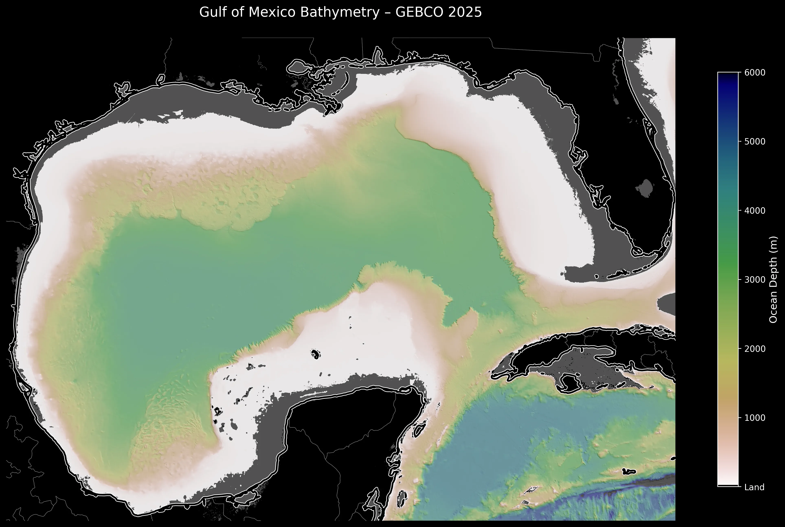
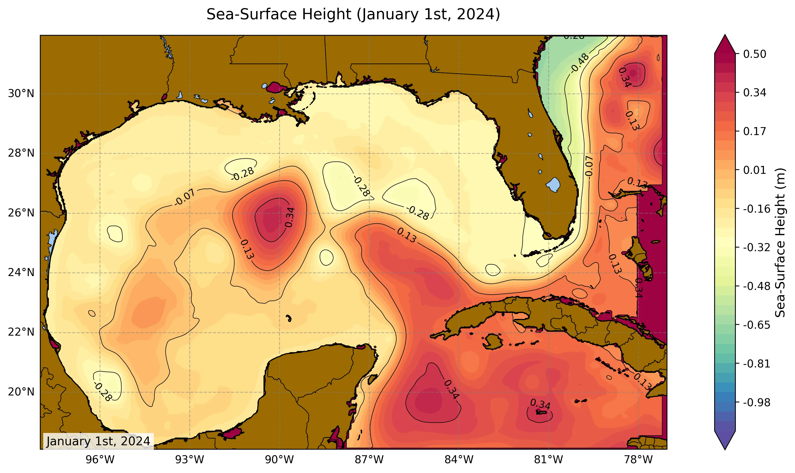
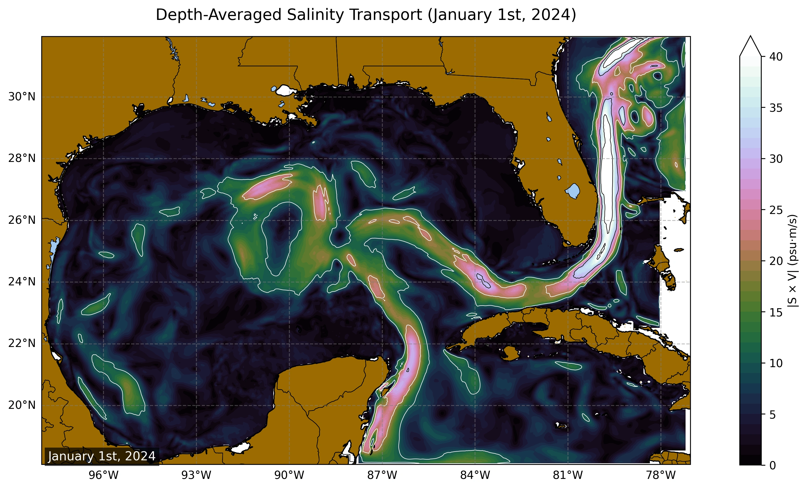
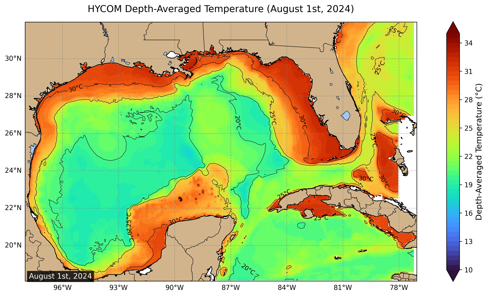
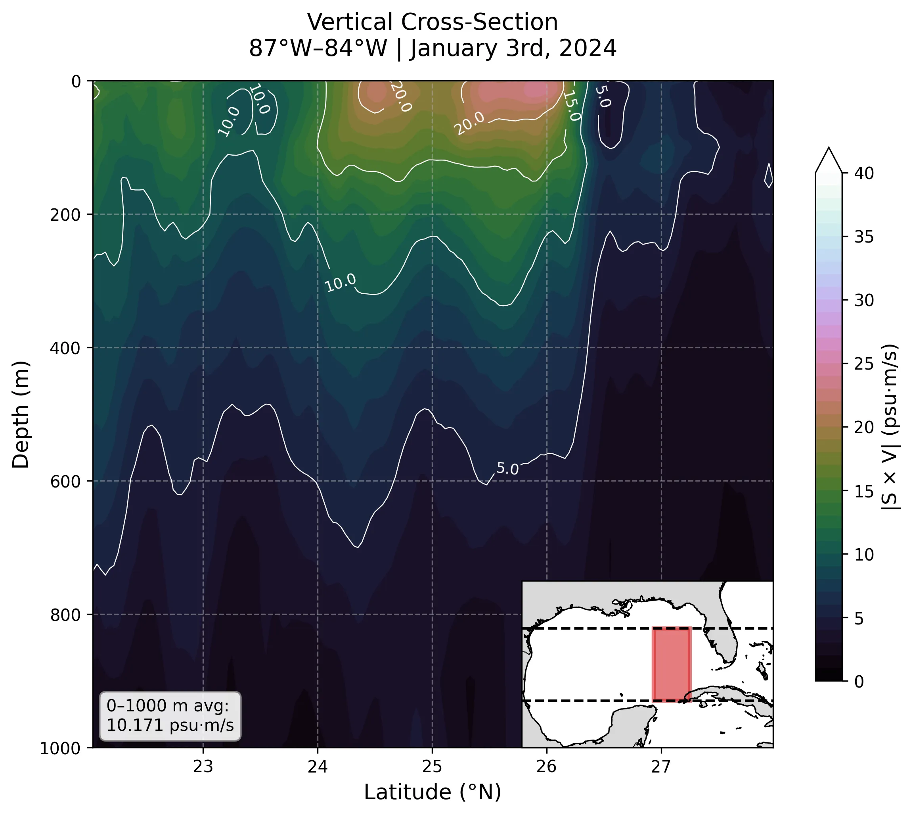
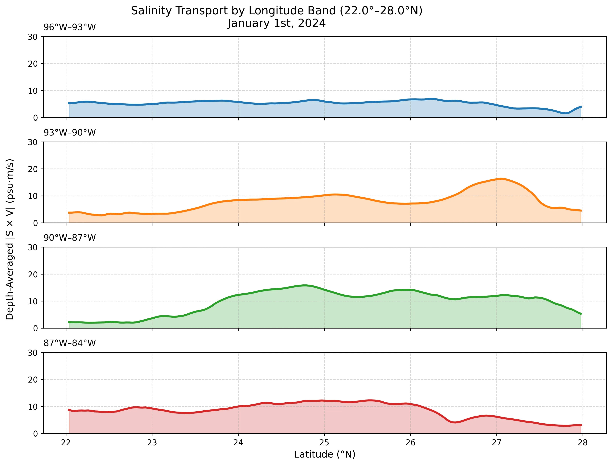

Sea Surface Height
Mesoscale eddies & currents

Surface Salinity
Freshwater plumes & mixing

Sea Surface Temp
Thermal fronts & upwelling

Depth Cross-Section
Vertical structure

Depth-Transposed Lines
Time-depth profiles

Salinity + SSH
Combined dynamics